A WebAssembly Field Guide | Flaki, JSConf Korea 2019
Content Warning: slides contain some mild flashing and visual glitching.

presents
Welcome to Vault 6D-73-61!
You have spent your whole life underground, always curious and fascinated by the gently humming machines around you, doing their jobs to sustain your community. Whatever caused the big calamity that forced your ancestors underground decades ago was in receding, people recently started wandering outside the heavy vault doors, exploring your desolate surroundings.
The re-established connection to other settlements came handy when you managed to barter a bulky operating manual and started discovering the depths of the technology that is at the beating heart of your underground habitat. As a newly appointed Chief Vault Technician you are tasked to use this knowledge to improve the life of your community, and you have every intention in doing so...
Istvan Szmozsanszky, a.k.a. Flaki
@slsoftworks
My name is Istvan Szmozsanszky (now you know why I just stick with “Flaki”).
I’m a freelance web developer - originally from Budapest, Hungary but I now live in Estonia.
I've spent quite some time in Asia in the past few years but this is my first time in Korea, not counting that one transfer in Incheon airport.
Mozilla Tech Speakers
@mozTechSpeakers
I’m a Mozilla Tech Speaker - TechSpeakers is a program by Mozilla to support its community members teaching and speaking at conferences about open web technologies and the open web in general.
Developer Relations @ Mozilla
@mozhacks
I work with Mozilla’s DevRel Team where I help steer their developer community efforts (including the Tech Speakers program) & evangelizing open web technologies, especially some of the bleeding edge stuff like WebAssembly, service workers and a systems programming language called Rust.
(if you cannot imagine what could a systems programming language have to do with the open web, hold on to that thought, we’ll get there!).
Join the WebAssembly community!
webassembly.org
I have been following closely the developments around WebAssembly and related technologies for a few years now, and currently also participate in the WebAssembly Community Group that is driving the evolution of the specification and the expansion of WebAssembly’s featureset... and you could be, too!
You don’t have to be a compiler engineer, or need to work at a big influential company to do this! The Community Group operates under the supervision of W3C, but is actually open to participation for anyone interested.
Go to webassembly.org and visit the Community page to learn about the many ways you could contribute to the work of the community group.
Shape WebAssembly @ Mozilla Advanced Development
In this talk I will mention some of the many ways Mozilla (and people working at Mozilla) contributed to the creation & evolution of WebAssembly. While I haven’t been involved in this effort, there is now an entire dedicated team at Mozilla, working on the bleeding edge of web technologies, shaping WebAssembly's future.
If you would be interested in being part of this work find me later and I will be happy to connect you with the right people.
Explore, Tinker, Experiment!
Before we dive in: this talk is not intended to teach you how to use/code/generate WebAssembly.
There is great documentation, online code playgrounds, tutorials and blogposts a-plenty that can help you once you’ve decided to get your hands dirty… this talk will focus more on how will you get there. The intention is to offer a better understanding for anyone why should they care (or maybe even, if they should care at all) about WebAssembly and help you out by providing pointers where to look for more information should you decide to dive in.
![DVD-style warning fineprint reads: Warning! Due to the nature of the technologies discussed herewithin there is always fair chance for any factually specific information regarding the technologies as they are implemented to be outdated by the time this work is consumed. This is inevitable despite the Author’s best efforts, and thus all details presented ought to be taken with a grain of salt and perhaps even a tiny dash of skepticism. All depicted events & characters portrayed in this presentation are a work of fiction and exist solely in a computer’s digital imagination, with high probability amongst a kettle of electric sheep. Furthermore any perceived similarity or resemblance to actual triple-A multimedia entertainment titles could merely be coincidental.](./assets/disclaimer.png)
“Due to the nature of the technologies discussed herewithin there is always fair chance for any factually specific information regarding…” yada-yada, people never read these disclaimers anyway, right?
The gist of it is: I’m going to be talking about highly volatile, work-in-progress technologies that might change anytime, significantly, so always do your research first before taking any of this into production!
Now with that out of the way, let us get back to our favorite Vault Technician who’s about to learn an invaluable lesson…
Act I: Important History Lesson
Couple hundred pages into your newly acquired operating manual you still seem to be stuck with historical tropes from an era where horse-drawn carriages roamed the streets. All this time, there is not a single bit of userful information or anything hands-on to be found on any of your vault’s systems.
- What a waste of time!!
In your sudden fit of rage you angrily toss the manual onto the corridor, it flying right past one one elderly fellow vault dweller. You apologise profusely, explaining the situation, but the old man just laughs, his reply imparts a lifetime of wisdom:
“Oh dear… Actually, history provides the single most precious kind of knowledge amongst all -- there are invaluable lessons to be learned from the context exposed by past history…”.
History provides Context
Skepticism towards WebAssembly may often be rooted in the fact that few are familiar with the technology’s evolution, influences or goals -- its history, for short.
Of course, we can’t really expect all developers to know about the long journey that led to WebAssembly’s creation, but I’ll take a stab at highlighting few of the main motivators -- real issues of the web platform and the solutions WebAssembly aims to provide.
But wait... What is this WebAssembly again?
WebAssembly allows code that was written in any of a wide variety of programming languages to be run securely on the web.
The original source code of a supporting programming language is compiled into a size- & execution speed-efficient binary format that can be executed safely and at close-to-native speeds inside the web browser.
But wait... What is this WebAssembly again?
“Close-to-native speed” here refers to the fact that execution speed of WebAssembly-compiled binaries, in many cases today are able to approach the performance of the same source code when it’s compiled to the native executable format of any given platform.
But wait... What is this WebAssembly again?
“Safe execution”, on the other hand refers to various ways how during execution of WebAssembly code certain security guarantees are strictly enforced. This means running this third-party code on the user’s machine remains safe, robust and isolated from the rest of the page.
A Whirlwind Tour of Compile to Web
Before 2012, that was basically the primordial period. You know, dinosaurs, jQuery... Except JavaScript has been steadily increasing in speed for half a decade now. The war of JavaScript engines toughened them up all, but you can never have enough of speed, can you?
Asm.js debuted in 2013, it was created as an easy-to-optimize JavaScript subset that compilers and tools could directly target to generate code that will run in the browser. Browser JS engines had specific optimizations for this code.
In supporting browsers it was even possible to compile games and 3D engines, with barely any changes to their original source code, and just run them in the browser at comfortable speeds. Its (you could say spiritual) successor, WebAssembly was released in 2015. All four major browsers shipped support in a few-months-wide time window, and continues to be under active developed until this day.
Don't worry, I wasn’t planning to bore you with an *actual* history lesson. I think it will be much more interesting to take some of the WebAssembly's key features and have a look into how they came to be.
Augment - not obsolete
WebAssembly has been built on the core principle that can be summarized as “augment, not obsolete”. This means it focuses on seamless integration, really striving to extend & complement the existing web platform, rather than trying to compete with it.
In fact, WebAssembly modules are largely inert without the embedder’s cooperation, and don't expose any features beyond those already available to JS, either. Embedder here means the host environment: the browser is one such, but there are quite a few others these days. In this case of the browser's JavaScript embedder, one could say (with some simplification) that:
“with WebAssembly today, you won't be able to do what your JavaScript couldn't already do, but you could do the things you were already doing potentially faster”.
Evolution over revolution
This cooperative, complementary relationship actually predates WebAssembly. I mentioned Asm.js was a JavaScript subset -- that is “still practically JavaScript”, but its true brilliance lies in the fact that the changes required for supporting the optimizations of this subset were so minimal that all large browsers wanted in on it.
The Asm.js feature set was not only easy to implement in JavaScript engines, but was a straightforward enough set of instructions for tooling (primarily compilers) to target, too. This meant both the creator and consumer sides had good incentives driving the adoption of the technology.
Soon enough, one after the other all modern browsers have shipped support for Asm.js optimizations in their engines. This cooperation of browser vendors outlived Asm.js. Following its success, the people who worked on Asm.js started exploring the work needed to fix some of Asm.js’s inherent shortcomings.
Simplicity, by neccessity...
For a casual observer, WebAssembly is often perceived as “simple”, usually refering to its highly constrained feature set.
After shipping Asm.js it became clear some of its shortcomings were not fixable without breaking the web, or a departure from the existing architecture, so this work spawned many different ideas and explorations. All of those eventually converged into a minimal set of features to become what we call the WebAssembly MVP today.
Browser vendors working closely together on Asm.js have paved a way for a cooperation strong enough to make a sweeping change as WebAssembly possible. The “WebAssembly MVP”, a Minimum Viable WebAssembly, allowed for robust, extensible and future-proof foundations to be laid out, even in this diverse cross-industry setting. More contentious issues were set aside to bake for some additional time, or to be informed by some of the preliminary feedback as it started trickling in from early adopters.
This left WebAssembly in a constant state of evolution, as the community group designs additional enhancements based on both implementer- and end-user feedback. Even as we speak, there are 10+ proposals underway, in various stages of completion.
While this is all true, if we look beyond the resource constraints of the standardization work, WebAssembly’s overall simplicity is just as much...
...or simplicity, as a defining feature of robustness
...a deliberate design choice.
The entire specification is around a hundred pages, the instruction set and the formal description of the Wasm runtime fits on a single page.
The above quote is from the WebAssembly specification. This simplicity awards WebAssembly the robustness and reduced complexity of a slim runtime that is in the meantime quite easy and quick to implement. It also means these runtimes could generate consistently fast code across all the platforms WebAssembly can target.
This property -- the safe & secure execution at consistently fast, close-to-native speeds on all target platforms -- is already hinting towards usecases beyond the web, but let us not get ahead of ourselves, and talk about what (creators on) the web have to gain first.
Act II: Unearthing the Buried Treasure
Almost a year have past since you first got your hand on your first operating manual. Slowly, but surely you have become more handy around the vault, fixed this, rebuilt that... even gained some notoriety for some of your creations and your knowledge, you occasionally get visitor from other Vaults seeking your advice or experience. You cannot not fondly remember that one time when you almost knocked a poor fellow vault dweller unconscious with the book in frustration of it being "useless". You smile as you put the finishing touches on a new piece of machinery, and it whirrs to life with lively squeeling as you push its big green button...

Why should you Web-Assemble?
Often it’s not easy to immediately see the benefit of a technology for one’s own usecases—but this doesn't mean it doesn't have any. Finding the ideal use case often takes time, and rarely happens without exploratory research and experimentation.
Industry testimonials that report significant gains from making use of WebAssembly almost never fail to mention the winding road they have embarked on before the true benefits of the technology started shining through.
Wasm is a really versatile technology (it is a turing-complete stack machine, after all) which means the possibilities are near limitless, but do not come without tradeoffs. Prototyping and measuring real user benefit, change in engineering productivity, product complexity etc. is crucial for making sure the right balance is struck in these tradeoffs.
WebAssembly Monoliths
One of the first (and to this date most mature) tools used in the ecosystem is Emscripten, a C/C++ compiler for Asm.js and WebAssembly. Emscripten is as old as the entire ecosystem, it was born with and then co-evolved alongside Asm.js. When WebAssembly rolled around Emscripten was one of the first tools to support it as an output/target format.
Emscripten made it possible (easy, even) to compile large pre-existing code bases, libraries, or even entire apps, sometimes millions of lines of code, for the web. Not the most prevalent web usecase, I’ll admit, surely not many of you had ever had the sudden urge to ship a triple-A game title to a vanilla web browser. :)
Furthermore often these compiled bundles ended up being tens or even hundreds of megabytes, a very scary figure considering the ever-increasing bloat of today's websites.
All this is to say, that this era has certainly found(ed) an enthusiastic niche for "compiling code for the browser", but it stayed quite far from becoming “mainstream”...
WebAssembly for small drop-in libraries
Even for those not writing their own games and desktop-class apps, Emscripten was still useful.
One could write a small(-ish) module in a low-level language, like C/C++, compile it and use it in one’s webapp to surgically replace raw performance-sensitive parts, or use it to target the web as one of the platforms.
One would need to be able to write code in a low-level language, as well as write JavaScript glue code to these custom modules -- rarely making these libraries/modules the most portable pieces of code ever writtten -- but it worked.
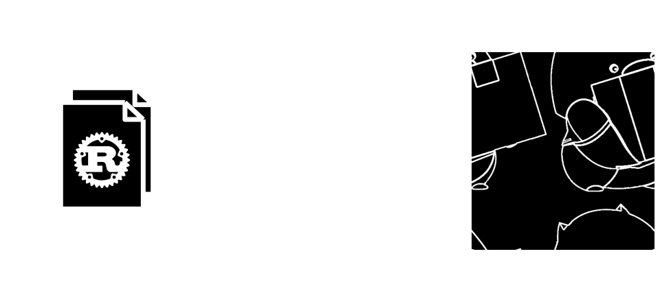
WebAssembly with Rust
Emscripten is not the only way, either. Rust was one of the first low-level systems languages that not only added built-in support for the WebAssembly target, but took it one step further and even doubled down on supporting WebAssembly as a first-class citizen.
High performance, robust memory guarantees, stellar docs, sophisticated tooling and an extensive library of “crates” (third-party modules) that could be imported and re-used in an npm-ish fashion made Rust an ideal choice for someone wanting to go deep, but unwilling to deal with C++'s shenanigans.
RustFest
Rust Tokyo
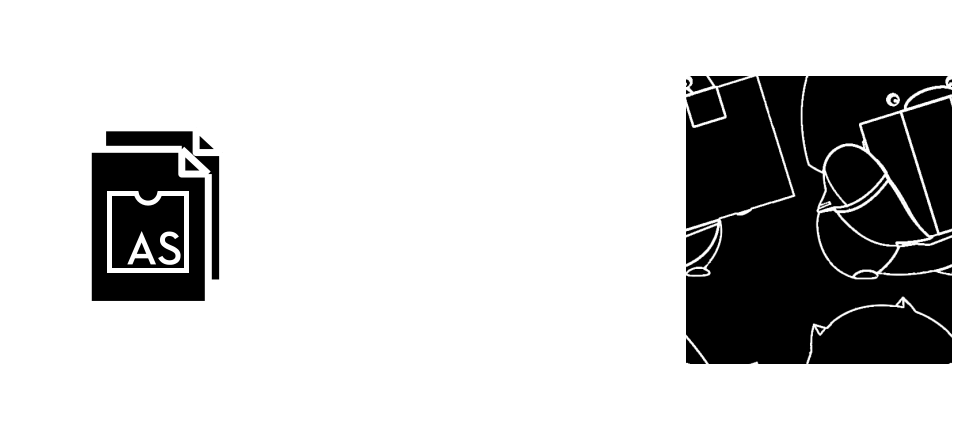
WebAssembly with AssemblyScript
Of course, not everyone can -- or wants to learn to -- code in a low-level language just to get work done. AssemblyScript provides a language for this with much more familiar semantics to all JavaScript-developers.
Being a subset of TypeScript, AssemblyScript serves as a much lower barrier of entry to creating WebAssembly modules for web developers.
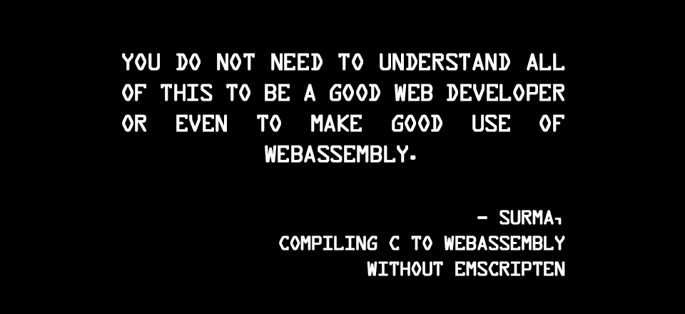
Surma: Compiling C to WebAssembly without Emscripten
dassur.ma/things/c-to-webassembly/
But even so, "You do not need to understand all of this to be a good web developer or even to make good use of WebAssembly."
Surma in the quoted post explains one does not need to be using bespoke tooling just to be able to create and use WebAssembly modules in one's projects.
And surely, just using Emscripten or a precompiled Wasm distribution of popular libraries will go a long way. With tools like AssemblyScript and more and more languages adding direct support for WebAssembly, purpose-built components will also thrive.
But even so it's hard to imagine that authoring WebAssembly modules will become a mainstream task, undertaken by the majority of web developers.
And that’s perfectly fine, it shouldn’t be! The good news is: one does not need to know WebAssembly (or even know about WebAssembly) to be able to benefit from the new technology’s ecosystem effects!
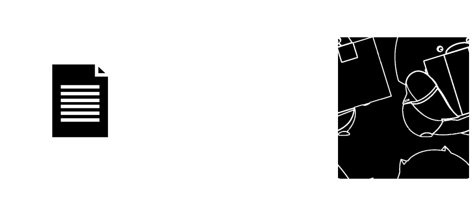
WebAssembly as integral ecosystem component
Proposals such as the Interface Types proposal, WebIDL Bindings or the ES Modules integration currently underway are working towards integrating WebAssembly modules even more seamlessly into the existing ecosystem.
In the future one would import a module using their favorite package manager and it could be using WebAssembly under the hood without the user being aware of the fact in the first place!
Also, even if one’s production code won’t end up using WebAssembly, one might still benefit from WebAssembly via build tooling and other adjacent tools utilizing WebAssembly in their own products. Webpack has been one of the early experimenters with WebAssembly, exploring its use for improving build times with promising results…
With recent announcements around Interface Types by the Mozilla Wasm team, this already pretty futuristic-sounding paradise might be closer than you’d think, but let us have a glance at the slightly-further-out potential of WebAssembly...
Act III: The Weird, the Wonderful and the Unexpected
Well mother nature certainly didn't stop coming up with bizarre new ideas while you and your compatriots were hiding in the cozy underground embrace of your vaults.
The swirling display of almost a dozen tails on this weird looking animal as you emerge from the vault one evening is sending chills down your spine. Hard to call it "nightmarish", as you are pretty sure you could never even dream up such a strange creature... What is it? Is it friendly or evil? Guess you will find out soon enough...
Language choice is an accessibility issue
It’s tough to “predict the future” of a nascent ecosystem—and WebAssembly is no different, we don't know where all of this ends up until we actually get there.
Some of the currently discussed post-MVP features, such as GC integration, Web IDL integration, Threading & Tail Calls to name a few will make it possible for more languages to target & interoperate with the web. This also includes more "exotic" ones, that is, languages and programming paradigms potentially very different from what JavaScript looks like today.
This of course nothing new, we live in an age of Babel, TypeScript, Elm, Reason… but WebAssembly will make this process even better, and the end result much faster.
This is not only interesting form a technology standpoint, but from increasing the diversity & accessibility of developing for the web. Allowing people to use whatever language they feel most comfortable with (rather than mandating one particular one) on the Web will make the web platform much more diverse and resilient in the future.
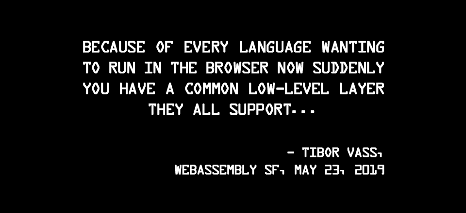
Cumulative Ecosystem Effects
https://www.youtube.com/watch?v=rZEQNH27y-k
Tibor Vass in the above quote notes something that is frequently observed: the Web Platform's gravity have given WebAssembly's adoption an incredible boost. But not all usecases necessarily need to involve the browser.
Sure, the web may be an excellent medium to popularize the use of WebAssembly -- but the same modules could later be adopted for (or, in certain cases, just ran out of the box) in any WebAssembly-compatible runtime.
Why restrict ourselves to the browser?
And then, why would we restrict ourselves to the Browser? WebAssembly seems to have some properties that could come in handy in various other contexts, too, wouldn't they?
Would it be possible to take some of the values of safe and secure sandboxing in the browser beyond the web with WebAssembly? Would it be possible to still provide enough power and flexibility required by the other all other use cases?
These are the questions that are being explored in the sister-specification of WebAssembly, the WebAssembly System Interface, or WASI for short. What would it take to take WebAssembly into less restricted environments, providing more capabilities but still retaining most of the safety guarantees that make WebAssembly so unique.
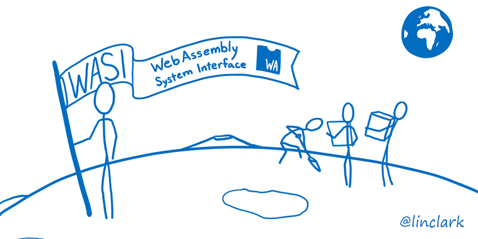
...we are not so different, after all.
Standardizing WASI a WebAssembly System Interface - Mozilla Hacks
WASI is another tremendous effort in re-imagining certain aspects of computing that we simply just never question, and take as a given. The proposal, initially presented by Mozilla but now worked on in the open in its own WebAssembly subgroup has the potential to extend WebAssembly's usefulness -- in a standardized way -- across a variety non-web platforms and usecases!
The Web, Embedded (microcontrollers), Cloud (edge computing)? At the end of the day, we might realize, that what seem vastly different usecases, are actually closer to each other than we think. Code size constraints of a web app (reducing bytes sent through the wire) may correspond to requirements on edge computing servers (storage limitations, sync time) as well as microcontrollers (storage).
We can already see that it's not only that WebAssembly is making its way to all of these other platforms, but motivates the creation of small, self-contained libraries on the source code's side, transitively enriching the web ecosystem.
You can learn more about WASI and its potential in Mozilla's Hacks blog thanks to Lin Clark's amazing and accessible cartoon deep-dives (I will share the links in the slides' resources section).
nas.sr/%D9%82%D9%84%D8%A8/
And when we’ve done all that, why stop there?
What if anyone could use their language of your choice to program -- but we did not stop at programming languages or different paradigms, but went all the way to liberating programming of the anglocentric human language?
What if learning programming didn't have to start with learning english, the latin alphabet, what if you weren't hindered by knowing the difference between "if"-s and "for"-s? What if you could write code entirely in Korean?
Ramsey Nasser is the rather well-known creator of the first arabic programming language, قلب /qalb/. But he didn't stop there.
His astounding, thought-provoking talk from Deconstruct Conference earlier this year explored how a purely language-agnostic programming language/paradigm could look like. His design prototype builds on WebAssembly as the underlying machine-readable code storage, with code fragments living on the distributed web, accessible for anyone, with language-specific metadata layered above to give anyone the chance to write and re-use code in their very own native tongue!
Links: [1] [2] [3]
As said, WebAssembly’s potential is seemingly limitless — in this case, its properties (a low level binary format) and platform-agnostic disposition made it an ideal choice for something truly fresh & unique.The only question that remains, is what will YOU do with it?
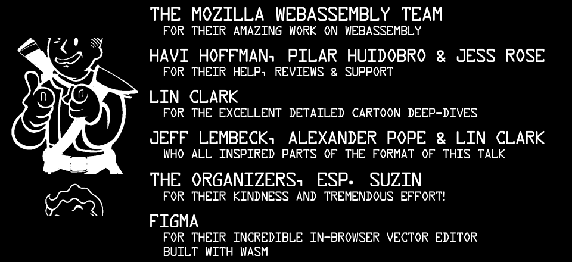
- The Mozilla WebAssembly team for their amazing work on WebAssembly
- Havi Hoffman, Pilar Huidobro & Jess Rose for reviews & support
- Lin Clark for the incredibly detailed cartoon deep-dives
- Jeff Lembeck, Alexander Pope & Lin Clark who inspired the format of the talk
- The organizers, esp. Suzin for their kindness and tremendous effort!
- Figma for the excellent in-browser vector editor they've built with Wasm!
and THANK YOU!
talk.flak.is/wasm/jsconfkorea